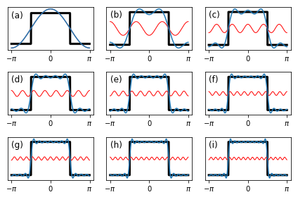
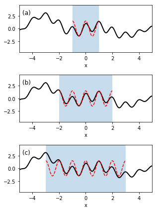
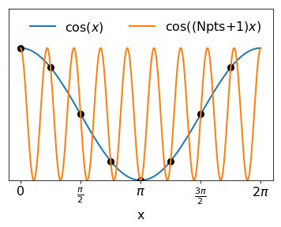
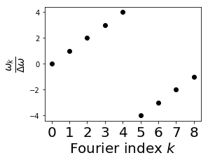
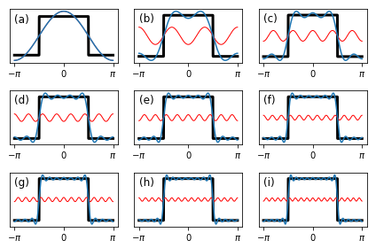
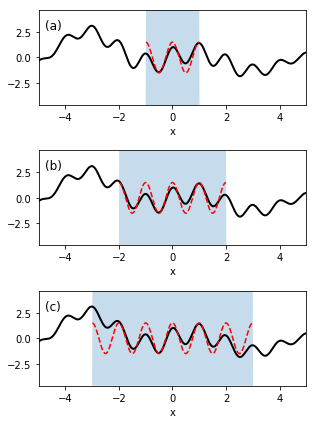
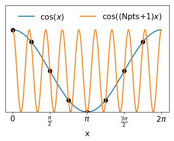
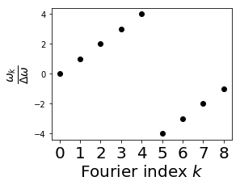
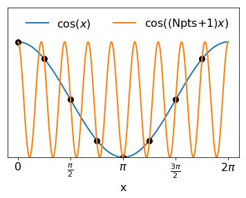
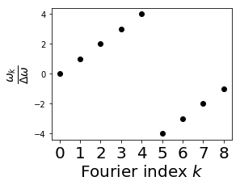

WARNING: Page is under revision. Please watch for typos!
What is a Fourier Transform?
A Fourier transform is a mathematical operation that decomposes a function (or signal) into an infinite sum or integral of sine and cosine curves.
A Motivating Example
The key concept behind the Fourier transform is that any signal on a fixed interval (say $-\pi$ to $\pi$) can be decomposed into a sum of sine and cosine terms whose periods are multiples of the interval length. This may at first seem surprising but isn't difficult to rationalize. Take, for example, the square wave $sq(x)$ shown as a thick black line in each frame of the figure below. At first, this sharp "signal" bears little resemblance to a sinusoidal curve. But if we "squint" a bit, we might notice that it has the same period as the function $\cos(x)$. Thus we could take as a first approximation (see frame (a)):
$$ \text{sq}(x) \approx a_1 \cos(x), $$
where $a_1$ is a constant chosen to match the amplitudes of the two signals. (More on how to choose these coefficients later.)

But we can do better than this. The biggest deficiency of our $\cos(x)$ approximation is that it misses the "sharpness" of the edges of the square wave: essentially, it makes the transition from "low" to "high" (and back again) too slowly. We can improve that agreement by adding in a component that rises more steeply on the left side and falls more slowly on the right. But $\cos(3 x)$ does exactly this: its higher frequency compared to $\cos(x)$ means that it rises and falls more steeply (in sync with the square wave) and even decreases the amplitude at the peak of the square wave, which $\cos(x)$ overestimates. Frame (b) of the figure illustrates in blue the "best-fit" approximation of the square wave as
$$ \text{sq}(x) \approx a_1 \cos(x) + a_3 \cos( 3 x) . $$
And we can keep going. As we continue to add higher-frequency cosine waves, the faster oscillations of each component allow us to match with greater and greater precision the sharp features of the square wave. In fact, if we were to continue this process indefinitely, we would end up with an *exact* representation
$$ \text{sq}(x) = a_1 \cos(x) + a_3 \cos(3x) + a_5 \cos(5x) + ... $$
Fourier's Theorem
This observation is the key to *Fourier's Theorem* (the theoretical basis for Fourier transforms): that any function on the interval $(-\pi,\pi)$ can be represented by a series of sine and cosine signals with integer frequencies. For an arbitrary function $f(x)$, Fourier's theorem asserts that
$$ f(x) = \frac{a_0}{2} + \sum_{n=1}^\infty a_n \cos(n x) + \sum_{n=1}^\infty b_n \sin(nx) , $$
where $a_n$ and $b_n$ are unique coefficients that depend on the function $f(x)$. An expansion of this form is called a *Fourier series*. Relative to our square wave example, the expansion here is more general. The $\cos(nx)$ terms treat functions that are *symmetric* on the $(-\pi,\pi)$ interval (like our square wave), while the $\sin(nx)$ terms can be used to describe functions that are *asymmetric* on the interval. Since all functions can be decomposed into symmetric and asymmetric components, the fact that the Fourier series can describe both means that it can handle *any* function.
How do we determine the coefficients?
Our statement of Fourier's theorem leaves open an obvious question: How do we know which $a_n$ and $b_n$ coefficients to use to represent a given function?
Actually, the answer isn't too hard to find. The answer is that
$$a_m = \frac{1}{\pi} \int_{-\pi}^{\pi} f(x) \cos(mx) \, dx . $$
$$b_m = \frac{1}{\pi} \int_{-\pi}^{\pi} f(x) \sin(mx) \, dx . $$
This relation gives us a simple way to calculate each coefficient $a_n$ needed to express *any* function $f(x)$ on the interval $(-\pi,\pi)$.
The key observation is simply that all of the "basis" functions $\cos(nx)$ and $\sin(nx)$ are *orthogonal* to each other, i.e., that
$$ \int_{-\pi}^{\pi} \cos(nx) \sin(mx) dx = 0$$
for *any* values of $m$ and $n$, and that for $m \neq n$
$$ \int_{-\pi}^{\pi} \cos(nx) \cos(mx) dx = 0$$
and
$$ \int_{-\pi}^{\pi} \sin(nx) \sin(mx) dx = 0 .$$
That the integral of $\cos(nx) \sin(mx)$ vanishes can be seen immediately from the symmetry of the integrand. $\cos(m x)$ is *symmetric* on the interval $(-\pi,\pi)$, while $\sin(mx)$ is *antisymmetric* on the same interval. Their product $\cos(mx)\sin(nx)$ is thus antisymmetric; when integrated, the positive and negative parts of any antisymmetric function cancel each other, so that the overall integral is zero.
That the integrals of $\cos(mx) \cos(nx)$ and $\sin(mx) \sin(nx)$ vanish when $m \neq n$ follows by using trigonometric identities
$$ 2 \sin( m x) \sin( n x) = \cos\left( (m - n) x \right) - \cos\left( (m + n ) x \right) $$
$$ 2 \cos( m x) \cos( n x) = \cos\left( (m - n) x \right) - \cos\left( (m + n ) x \right) $$
to rewrite these products as sums of $\cos\left( (m-n)x \right)$ and $\cos\left( (m + n) x \right)$. Both $\cos\left( (m-n) x \right)$ and $\cos \left( (m + n) x \right)$ complete an integer number of cycles on the interval $(-\pi,\pi)$, so that their positive and negative lobes cancel.
How does this help? Well, look what happens if we evaluate the integral
$$ \int_{-\pi}^{\pi} f(x) \cos(m x) dx $$
using our Fourier series representation of $f(x)$. Because the sine and cosine basis functions are orthogonal, the only integral in the series
\begin{align}
\int_{-\pi}^{\pi} \cos(mx) f(x) dx &= \frac{a}{2} \int_{-\pi}^\pi \cos(mx) dx \\
&+ \sum_{n=1}^\infty a_n \int_{-\pi}^{\pi} \cos(m x) \cos(n x) dx \\
&+ \sum_{n=1}^\infty b_n \int_{-\pi}^{\pi} \cos(m x) \sin(nx) dx
\end{align}
that can be nonzero is the cosine integral where $m = n$ (or the $a_0$ term if $m = 0$). Thus
$$ \int_{-\pi}^{\pi} \cos(mx) f(x) dx = a_m \int_{-\pi}^{\pi} \cos^2(m x) dx . $$
For $m = 0$, this integral is just $2\pi$ since $\cos(0\cdot x) = 1$. For $m \neq 0$, the integral can be evaluated by symmetry: since $\sin^2(mx)$ and $\cos^2(mx)$ complete the same number of cycles over the interval $(-\pi,\pi)$, their integrals over the interval $(-\pi,\pi)$ must be equal. And since $\sin^2(mx) + \cos^2(mx) = 1$, the *sum* of their integrals must be just $\int_{-\pi}^\pi dx = 2\pi$. Thus
$$\int_{-\pi}^\pi \cos^2(mx) dx = \int_{-\pi}^\pi \sin^2(mx) dx = \frac{2\pi}{2} = \pi . $$
We therefore obtain
$$ a_m \int_{-\pi}^{\pi} \cos^2(m x) dx = \left \{ \begin{matrix} 2\pi a_0 && m = 0 \\ \pi a_m && m \neq 0 . \end{matrix} \right . $$
Dividing through both sides of the equation by $\pi$ we get the desired expression for $a_m$. An equivalent calculation using $\sin(mx)$ in place of $\cos(mx)$ gives the result for $b_m$.
Euler's Formula
In most applications, Fourier series are used not in the sine and cosine forms just described but in an exponential form that makes use of Euler's formula for complex exponentials:
$$ e^{ix} = \cos(x) + i \sin(x) . $$
This formula gives a simple way to express $\sin(x)$ and $\cos(x)$ - and thus also our Fourier series - in terms of complex exponentials. Explicitly, we find that
$$ f(x) = \sum_{n=-\infty}^\infty \alpha_n e^{inx} $$
where
$$ \alpha_n \equiv \frac{1}{2\pi} \int_{-\pi}^\pi e^{- inx} f(x) dx. $$
Adding Euler's expresions for $e^{ix}$ and $e^{-ix}$ we get
$$ e^{ix} + e^{-ix} = 2 \cos(x)$$
or simply
$$ \cos(x) = \frac{e^{ix} + e^{-ix}}{2} . $$
Similarly, taking the difference of $e^{ix}$ and $e^{-ix}$ produces
$$ \sin(x) = \frac{e^{ix} - e^{-ix}}{2i} . $$
If we use these relations to express the $\cos(nx)$ and $\sin(nx)$ terms in our Fourier series, we find that
$$ f(x) = \frac{a_0}{2} + \sum_{n=1}^\infty \frac{a_n}{2} \left( e^{inx} + e^{-inx} \right) + \sum_{n=1}^\infty \frac{b_n}{2i} \left (e^{inx} - e^{-inx} \right), $$
or after regrouping the $e^{inx}$ and $e^{-inx}$ terms
$$ f(x) = \frac{a_0}{2} + \sum_{n=1}^\infty \frac{a_n -i b_n}{2} e^{inx} + \sum_{n=1}^\infty \frac{a_n + i b_n}{2} e^{-inx}. $$
If we take $\alpha_n^{(+)} \equiv \frac{a_n - i b_n}{2}$ and $\alpha_n^{(-)} \equiv \frac{a_n + i b_n}{2}$ to be two new coefficients, we can write our Fourier series as
$$ f(x) = \alpha_0 + \sum_{n=1}^\infty \alpha_n^{(+)} e^{inx} + \sum_{n=1}^\infty \alpha_n^{(-)} e^{-inx} . $$
From our existing definitions for $a_n$ and $b_n$, we find that
\begin{align}
\alpha_m^{(+)} &= \frac{1}{2 \pi} \int_{-\pi}^{\pi} f(x) \left( \cos(mx) - i \sin(mx) \right) \, dx \\
&= \frac{1}{2\pi} \int_{-\pi}^{\pi} e^{-i m x} f(x) \, dx
\end{align}
and
\begin{align}
\alpha_m^{(-)} &= \frac{1}{2 \pi} \int_{-\pi}^{\pi} f(x) \left( \cos(mx) + i \sin(mx) \right) \, dx \\
&= \frac{1}{2\pi} \int_{-\pi}^{\pi} e^{i m x} f(x) \, dx .
\end{align}
For the special case $\alpha_0$, we have simply $\alpha_0 \equiv \frac{a_0}{2}$. (This corresponds to setting $b_0 = 0$ in our sine/cosine expansion; technically we never defined $b_0$ since there is no $\sin(0\cdot x) = 0$ term in the original Fourier series.)
Since the only difference between the $\alpha_n^{(+)}$ and $\alpha_n^{(-)}$ coefficients is the sign in the exponent, the series can now be expressed more compactly as
$$ f(x) = \sum_{n=-\infty}^\infty \alpha_n e^{inx} $$
where
$$ \alpha_n \equiv \frac{1}{2\pi} \int_{-\pi}^\pi e^{- inx} f(x) dx. $$
Note that because Fourier's theorem applies equally well to the real and imaginary parts of any function, as long as the coefficients are allowed to be complex numbers, the decomposition works equally well for real and complex functions.
Fourier Series on Finite Intervals
Our treatment so far is essentially complete for functions on the interval $(-\pi, \pi)$. But what about functions on other intervals? What if we want to consider functions on the entire real line $(-\infty,\infty)$?
Let's do the easy part first: functions on an arbitrary interval $\left(-\frac{L}{2}, \frac{L}{2}\right)$. We can handle this case quite easily from our existing results by just scaling the $x$ axis. A function $f(x)$ on the interval $\left(-\frac{L}{2},\frac{L}{2} \right)$, can be represented via the Fourier series
$$ f(x) = \sum_{n=-\infty}^\infty \alpha_n e^{i 2 \pi \frac{n}{L}x} $$
using the coefficients
$$ \alpha_m = \frac{1}{L} \int_{-\frac{L}{2}}^{\frac{L}{2}} e^{- i 2\pi \frac{m}{L} x} f(x) \, dx. $$
Given a function $f(x)$ on the interval $\left( -\frac{L}{2}, \frac{L}{2} \right)$, make the change of variables
$$ u = \frac{2\pi}{L} x . $$
The function $g(u) = f\left( \frac{L}{2\pi} u \right)$ is then defined on the interval $u = (-\pi, \pi)$ and can be decomposed under Fourier's theorm with coefficients
\begin{align}
\alpha_m &= \frac{1}{2\pi} \int_{-\pi}^{\pi} e^{- i m u} g(u) \, du\\
&= \frac{1}{L} \int_{-\frac{L}{2}}^{\frac{L}{2}} e^{- i m \frac{2\pi}{L} x} f(x) \, dx .
\end{align}
Now because
$$ g(u) = \sum_{n=-\infty}^\infty \alpha_n e^{i n u} ,$$
$f(x)$ can be represented as
$$ f(x) = g\left( \frac{2\pi}{L} x \right) = \sum_{n=-\infty}^\infty \alpha_n e^{i 2 \pi \frac{n}{L}x} $$
using the coefficients $\alpha_m$ already given.
Fourier Transforms
Finally, we're ready to think about extending this representation to functions on *the entire real line* as opposed to just the finite interval $\left( -\frac{L}{2}, \frac{L}{2}\right)$. To accomplish this all we really have to do is take the limit $L \to \infty$. But there is one conceptual hurdle we need to tackle first: to shift from thinking about our Fourier components as a function of how many oscillations $n$ they make on the interval $\left( -\frac{L}{2}, \frac{L}{2}\right)$ to how many oscillations they make *per unit distance* on the real line.
The difference between these two perspectives is illustrated in the figure above. The black line in each frame represents some function $f(x)$ we wish to represent in a Fourier series. The red dashed curve represents the function $\cos(2\pi x)$, which appears to contribute substantially to $f(x)$. The blue shading in each frame indicates three different intervals of length $3$, $6$ and $9$ over which we might choose to represent the function.

Now, in the top frame, $\cos(2 \pi x)$ completes 2 cycles over the interval $(-1,1)$; in terms of our Fourier series, this corresponds to the coefficient $a_2$. In the second frame, $\cos(2\pi x)$ completes 4 cycles on the interval $(-2,2)$, corresponding to coefficient $a_4$, and in the third frame it completes 6 cycles in the interval $(-3,3)$, corresponding to $a_6$.
So we see that, depending on the interval over which we study $f(x)$, the component $\cos(2\pi x)$ may appear as the $n = 2$ Fourier component, the $n = 4$ component, or the $n = 6$ component. As a function of the independent variable $x$, however, $\cos(2\pi x)$ obviously oscillates with a fixed *frequency* of $ 2\pi . $
The point of all this is that if we want to extend our box length $L \to \infty$, we can't simply take the limit of the Fourier coefficients $a_n$ or $\alpha_{n}^{(\pm)}$ as $L \to \infty$, since $\alpha_{n}^{(\pm)}$ represents a very different signal over the interval $(-1,1)$ than it does over the interval $(-3,3)$ or $(-1000, 1000)$. Instead, we want an expression for whichever coefficient corresponds to an oscillation frequency of, e.g., $2\pi$ or $3\pi$ or $n\pi$.
With this in mind, let's think again about our Fourier series in terms of the complex exponentials $e^{\pm i 2 \pi \frac{n}{L} x}$. The oscillation *frequency* of each such term as a function of $x$ is
$$ \omega = \pm 2 \pi \frac{n}{L} . $$
The $L \to \infty$ analog to our expansion coefficients $\alpha_n$ is thus not the quantity $\lim_{L \to \infty}$ but the quantity
$$ \tilde f(\omega) \equiv \lim_{L \to \infty} \int_{-\frac{L}{2}}^\frac{L}{2} e^{-i \omega x} f(x) dx = \int_{-\infty}^\infty e^{-i \omega x} f(x) dx $$
where we have swapped out the discrete frequency $ \pm 2 \pi \frac{n}{L}$ (which depends on both $n$ and $L$) with a continuous frequency variable $\omega$. This new quantity $\tilde f(\omega)$ is called the **Fourier transform** of $f(x)$ and tells us how much contribution the oscillating component $e^{i\omega x}$ makes to our total function $f(x)$. In fact, if we let $\omega$ take on both positive and negative values, this single definition accounts for both the $e^{i 2\pi \frac{n}{L} x}$ terms *and* the $e^{ - i 2\pi \frac{n}{L} x}$ terms in our Fourier sum.
Since we now have a continuous index $\omega$ denoting our frequency components, we can no longer represent $f(x)$ as a discrete *sum* but as a continuous *integral* over the various Fourier components:
$$ f(x) = \frac{1}{2\pi} \int_{-\infty}^{\infty} e^{i \omega x} \tilde f(\omega) \, d\omega . $$
The factor of $\frac{1}{2\pi}$ appears as a normalization constant during the passage of of the discrete sum to the continuous integral.
Discrete Fourier Transforms
When we perform Fourier transforms numerically, we must necessarily sample our signal function $f(x)$ at a set of discrete data points, since the computer can't store the values for $f(x)$ sampled at *all* of the infinite number of possible data points along the $x$ axis. Typically we'll sample $f(x)$ at some constant step size $\Delta x$ along some interval which, for convenience, we'll take to be $\left ( 0, L \right)$. (To sample on any other interval, we can just shift the function $f(x)$ along the $x$ axis). Let's say we sample at $N$ evenly-spaced data points along the interval; then our step size must be
$$ \Delta x = \frac{L}{N} $$
and our sampling points are $x_0$, $x_2 = \Delta x$, ..., $x_{N-1} = \left( N - 1 \right) \Delta x $. Note that the *last* data point is
$$x_{N-1} = \frac{N-1}{N} L = L - \Delta x, $$
so we never actually sample the right end-point of the interval. On the computer we then store a *vector* of data points whose elements are
$$ f_n = f(x_n) . $$
The Discrete Fourier Transform (DFT) of this vector $f_n$ is
$$ F_k \equiv \sum_{n=0}^{N-1} e^{- i 2\pi k \frac{n}{N} } f_n . $$
From it, the original vector $f_n$ can be calculated as
$$ f_n = \frac{1}{N} \sum_{k=0}^{N-1} e^{i 2\pi n \frac{k}{N} } F_k . $$
The $k^\text{th}$ Fourier component $e^{i 2\pi \frac{k}{N} n}$ in this expansion corresponds to a frequency of $\omega_k = k \frac{1}{L}$ or, equivalently, to a frequency of $\omega_k = - (N - k) \frac{1}{L}$. The frequency step size for the new Fourier axis is therefore
$$ \Delta \omega = \frac{1}{L} = \frac{1}{N\Delta x} . $$
Thus the frequency resolution of the Fourier transform improves as we sample the original function $f(x)$ over longer intervals on the $x$ axis.
From the finitely sampled $f_n \equiv f(x_n)$, we can't calculate the *exact* Fourier coefficients
$$ \alpha_k = \frac{1}{L} \int_{0}^{L} e^{- i 2\pi \frac{k}{L} x} f(x) \, dx. $$
because we only have access to $f(x)$ at the finite sampling points $x_0, x_1, ..., x_N$. (Note that, because we chose our sampling interval to be $(0,L)$ instead of $\left (-\frac{L}{2}, \frac{L}{2} \right)$, we've had to update our integration limits; everything else from our earlier development of Fourier sums remains intact.) The best we can do is turn our continuous integral into a discrete sum
$$ F_k = \frac{1}{L} \sum_{n=0}^{N-1} e^{- i 2\pi \frac{k}{L} x_n} f(x_n) \Delta x $$
where we sample $f(x)$ at our discrete points $x_n$ and the differential $dx$ becomes the step size $\Delta x$. (Formally, this is the left Riemann sum approximation to the integral.) Pulling the constant factor of $\Delta x$ outside the sum and noting that $x_n = n \Delta x$ and $N = \frac{\Delta x}{L}$, this can be written
$$ F_k = \frac{1}{N} \sum_{n=0}^{N-1} e^{-i 2\pi k \frac{n}{N} } f_n . $$
Overcounting
Now, let's stop for a moment to think about which values of $k$ make sense to calculate here. For our continuously sampled function $f(x)$ the Fourier summation index extended from $-\infty$ to $\infty$. But in our finite representation, this poses a problem. Consider that because $e^{\pm i 2\pi n} = 1$ for any integer $n$:
$$ e^{i 2 \pi k \frac{n}{N}} = e^{ \pm i 2 \pi \frac{N}{N} n } e^{i 2 \pi k \frac{n}{N}} = e^{i 2 \pi (\pm N + k) \frac{n}{N}} $$
for any integer $k$. What this means is that the $k^\text{th}$ Fourier coefficient $F_k$ is *identical* to the $(N+k)^\text{th}$ coefficient - and to the $(k-N)^\text{th}$ coefficient, the $(2N+k)^\text{th}$ coefficient, the $(k-2N)^\text{th}$ coefficient and so on.
Why does this happen? Conceptually, it's because the $k^\text{th}$ discrete Fourier basis function $e^{i 2\pi k \frac{n}{N}}$ represents a continuous function $e^{i2\pi k \frac{x}{L}} = e^{i 2 \pi \frac{k}{L} x}$ that repeats itself (as a function of $x$) with period $\frac{L}{k}$. If this cycle period is *faster* than our sampling period $\delta x$, the basis function will complete its full cycle *in between* our sampling points. At the sample points, it will thus take on the same values as (and be indistinguishable from) some slower component that oscillates with a frequency of either $(k-N)$ (if $k>0$) or $k+N$ (if $k<0$). An example is shown in the figure below depicting an $N = 8$-point discrete sampling (black points) of the functions $\cos(x)$ (blue curve) and $\cos(9x)$ (orange curve). Because $ 9 = 1 + Npts$, the two functions appear identical in our discrete sampling.

The point here is that, although we could *define* as many Fourier coefficients $F_k$ as we like, at most $N$ of these coefficients can encode useful information, since the rest will simply be repeats of some other coefficient.
Computational Conventions
Because the $F_k$ coefficients are periodic with period $N$, we have some freedom to choose *which* $N$ coefficients we use to represent our original vector $f_n$. For example, we could choose only the first N non-negative coefficients, letting $k$ range from $0$ to $N-1$. Or we could choose only the non-positive coefficients, with $k$ ranging from $-k$ to $0$. And different computational implementations of Fourier transformations often do, in fact, choose different conventions on how to define discrete Fourier transforms. Similarly, the factor of $\frac{1}{N}$ can be included in the definition (as above) or reserved for when we transform data *back* from the Fourier representation to real space.
Perhaps the most common is to choose the non-negative $k$ series with*out* the $\frac{1}{N}$ prefactor so that the **Discrete Fourier Transform** (DFT) $F_k$ is defined as
\begin{align}
F_k \equiv \sum_{n=0}^{N-1} e^{- i 2\pi k \frac{n}{N} } f_n, && k=0,1,...,N-1 .
\end{align}
The original function $f_n$ can be recovered via the **Inverse Discrete Fourier Transform**
$$ f_n = \frac{1}{N} \sum_{k=0}^{N-1} e^{i 2\pi n \frac{k}{N} } F_k , $$
in direct analogy to our earlier Fourier sum representation. To see that this does indeed recover the original function, insert the definition of $F_k$ to observe that
\begin{align}
\frac{1}{N} \sum_{k=0}^{N-1} e^{i 2\pi n \frac{k}{N} } F_k &= \frac{1}{N} \sum_{k=0}^{N-1} e^{i 2\pi n \frac{k}{N} } \left( \sum_{m=0}^{N-1} e^{- i 2\pi k \frac{m}{N} } f_m \right) \\
&= \frac{1}{N} \sum_{m=0}^{N-1} f_m \sum_{k=0}^{N-1} e^{i 2\pi ( n - m )\frac{k}{N} } .
\end{align}
Now, when $m \neq n$, the exponent $e^{i 2\pi ( n - m )\frac{k}{N}}$ completes an integer number of complete cycles as $k$ ranges from $0$ to $N-1$, so that the sum across $k$ sum vanishes exactly. Conversely, when $m = n$, the exponential is just $e^{i 2\pi \cdot 0 \cdot \frac{k}{N} } = 1$. Thus out of the sum over $m$ only the terms with $m = n$ survive, and
\begin{align}
\frac{1}{N} \sum_{m=0}^{N-1} f_m \sum_{k=0}^{N-1} e^{i 2\pi ( n - m )\frac{k}{N} } &= \frac{1}{N} f_n \sum_{k=0}^{N-1} 1 = f_n.
\end{align}
Thus the inverse DFT does indeed recapture the original discretely sampled function $f_n$.
Frequency Axes in DFTs
This DFT gives us a numerical method for converting a vector $f_n$ (corresponding to the discretely-sampled function $f(x)$) to a Fourier vector $F_k$ whose entries represent Fourier coefficients of in $e^{ i 2\pi kx}$ decomposition of $f(x)$. But it may not be immediately obvious what frequency axis this $F_k$ vector is sampled over.
To identify the frequency axis, recall that component $F_k$ of the Fourier vector corresponds in the inverse transform to the oscillating exponential $e^{i 2\pi k \frac{n}{N}}$. In terms of our discretely sampled data points $x_n = n \Delta x = L \frac{n}{N}$ the $k^\text{th}$ Fourier component becomes
$$ e^{i 2\pi k \frac{n}{N}} = e^{i 2\pi k \frac{x_n}{L}} = e^{i 2\pi \frac{k}{L} x_n} . $$
As a function of the continuous variable $x$, this is exactly the discrete-sampling representation of the continuous function $e^{i 2\pi \frac{k}{L} x}$, which oscillates with frequency
$$w_k = 2\pi \frac{k}{L} .$$
Thus, the $F_0$ coefficient in our Fourier vector corresponds to the zero-frequency component $e^{i 2\pi \cdot 0} = 1$, while the coefficients $F_1$, $F_2$, etc., corrrespond to the Fourier basis functions $e^{i 2\pi \left( \frac{1}{L} \right) x } $, $e^{i 2\pi \left( \frac{2}{L} \right) x}$, $e^{i 2\pi \left( \frac{3}{L} \right) x}$, etc. The *units* on the DFT frequency axis thus should be just the inverse of the units on the $x$ axis, and the spacing between the frequency sampling points is
$$ \Delta \omega = \frac{2 \pi }{L}$$
or in linear frequency
$$ \Delta \nu = \frac{1}{L} . $$
Remember that there is some freedom of choice as to how we interpret these frequencies. If we allow $k$ to take on any integer value, we have (see discussion above on overcounting):
$$f_{k} = f_{k-N} . $$
So it is equally valid to think of the $k^\text{th}$ Fourier component as corresponding to frequency $k$ as to think of it as corresponding to frequency $k-N$. In the usual numerical convention, we choose $k$ to range from $0$ to $N-1$, so that $k-N$ is a negative number. Thus, the *positive* frequency $w_k = 2\pi \frac{k}{L}$ is equivalent to a *negative* frequency $w_k = 2\pi \frac{k-N}{L}$. Neither of these two interpretations is any more "correct" than the other, since (as far as finite-sampling is concerned) the corresponding Fourier components are identical.
For this reason, DFT frequency axes are often represented as
$$w_k = \left \{ \begin{matrix} k \Delta \omega, && k < \frac{N}{2} \\ \left( k - N \right) \Delta \omega && k \geq \frac{N}{2} . \end{matrix} \right. $$
This, for example, is the sort of frequency axis produced by the NumPy command np.fft.fftfreq(N) as illustrated in the figure below.

Which frequency axis is relevant to a given calculation depends on what Fourier components are actually present in the original signal. If $f(x)$ contains only signals with absolute frequencies lower than $\frac{N}{2} \delta \omega$, the np.fft.fftaxis() convention will be correct. If $f(x)$ contains higher-frequency signals, we say that $f(x)$ has been *undersampled*, and the contributions from these higher-frequency signals will be mixed with those of their finite-sampling-equivalent lower-frequency components. If $f(x)$ is known ahead of time to contain *only* higher-frequency signals, it may be acceptable to simply shift the DFT frequency axis to the relevant range; but this can be done safely only with definite advance knowledge of the Fourier decomposition of $f(x)$. Otherwise, $f(x)$ must simply be sampled with a smaller step size $\Delta x$ to avoid mixing high- and low-frequency components.
What is a Fourier Transform?
A Fourier transform is a mathematical operation that decomposes a function (or signal) into an infinite sum or integral of sine and cosine curves.A Motivating Example
The key concept behind the Fourier transform is that any signal on a fixed interval (say $-\pi$ to $\pi$) can be decomposed into a sum of sine and cosine terms whose periods are multiples of the interval length. This may at first seem surprising but isn't difficult to rationalize. Take, for example, the square wave $sq(x)$ shown as a thick black line in each frame of the figure below. At first, this sharp "signal" bears little resemblance to a sinusoidal curve. But if we "squint" a bit, we might notice that it has the same period as the function $\cos(x)$. Thus we could take as a first approximation (see frame (a)): $$ \text{sq}(x) \approx a_1 \cos(x), $$ where $a_1$ is a constant chosen to match the amplitudes of the two signals. (More on how to choose these coefficients later.)  But we can do better than this. The biggest deficiency of our $\cos(x)$ approximation is that it misses the "sharpness" of the edges of the square wave: essentially, it makes the transition from "low" to "high" (and back again) too slowly. We can improve that agreement by adding in a component that rises more steeply on the left side and falls more slowly on the right. But $\cos(3 x)$ does exactly this: its higher frequency compared to $\cos(x)$ means that it rises and falls more steeply (in sync with the square wave) and even decreases the amplitude at the peak of the square wave, which $\cos(x)$ overestimates. Frame (b) of the figure illustrates in blue the "best-fit" approximation of the square wave as $$ \text{sq}(x) \approx a_1 \cos(x) + a_3 \cos( 3 x) . $$ And we can keep going. As we continue to add higher-frequency cosine waves, the faster oscillations of each component allow us to match with greater and greater precision the sharp features of the square wave. In fact, if we were to continue this process indefinitely, we would end up with an *exact* representation $$ \text{sq}(x) = a_1 \cos(x) + a_3 \cos(3x) + a_5 \cos(5x) + ... $$Fourier's Theorem
This observation is the key to *Fourier's Theorem* (the theoretical basis for Fourier transforms): that any function on the interval $(-\pi,\pi)$ can be represented by a series of sine and cosine signals with integer frequencies. For an arbitrary function $f(x)$, Fourier's theorem asserts that $$ f(x) = \frac{a_0}{2} + \sum_{n=1}^\infty a_n \cos(n x) + \sum_{n=1}^\infty b_n \sin(nx) , $$ where $a_n$ and $b_n$ are unique coefficients that depend on the function $f(x)$. An expansion of this form is called a *Fourier series*. Relative to our square wave example, the expansion here is more general. The $\cos(nx)$ terms treat functions that are *symmetric* on the $(-\pi,\pi)$ interval (like our square wave), while the $\sin(nx)$ terms can be used to describe functions that are *asymmetric* on the interval. Since all functions can be decomposed into symmetric and asymmetric components, the fact that the Fourier series can describe both means that it can handle *any* function.How do we determine the coefficients?
Our statement of Fourier's theorem leaves open an obvious question: How do we know which $a_n$ and $b_n$ coefficients to use to represent a given function? Actually, the answer isn't too hard to find. The answer is that $$a_m = \frac{1}{\pi} \int_{-\pi}^{\pi} f(x) \cos(mx) \, dx . $$ $$b_m = \frac{1}{\pi} \int_{-\pi}^{\pi} f(x) \sin(mx) \, dx . $$ This relation gives us a simple way to calculate each coefficient $a_n$ needed to express *any* function $f(x)$ on the interval $(-\pi,\pi)$.
The key observation is simply that all of the "basis" functions $\cos(nx)$ and $\sin(nx)$ are *orthogonal* to each other, i.e., that
$$ \int_{-\pi}^{\pi} \cos(nx) \sin(mx) dx = 0$$
for *any* values of $m$ and $n$, and that for $m \neq n$
$$ \int_{-\pi}^{\pi} \cos(nx) \cos(mx) dx = 0$$
and
$$ \int_{-\pi}^{\pi} \sin(nx) \sin(mx) dx = 0 .$$
That the integral of $\cos(nx) \sin(mx)$ vanishes can be seen immediately from the symmetry of the integrand. $\cos(m x)$ is *symmetric* on the interval $(-\pi,\pi)$, while $\sin(mx)$ is *antisymmetric* on the same interval. Their product $\cos(mx)\sin(nx)$ is thus antisymmetric; when integrated, the positive and negative parts of any antisymmetric function cancel each other, so that the overall integral is zero.
That the integrals of $\cos(mx) \cos(nx)$ and $\sin(mx) \sin(nx)$ vanish when $m \neq n$ follows by using trigonometric identities $$ 2 \sin( m x) \sin( n x) = \cos\left( (m - n) x \right) - \cos\left( (m + n ) x \right) $$ $$ 2 \cos( m x) \cos( n x) = \cos\left( (m - n) x \right) - \cos\left( (m + n ) x \right) $$ to rewrite these products as sums of $\cos\left( (m-n)x \right)$ and $\cos\left( (m + n) x \right)$. Both $\cos\left( (m-n) x \right)$ and $\cos \left( (m + n) x \right)$ complete an integer number of cycles on the interval $(-\pi,\pi)$, so that their positive and negative lobes cancel.
How does this help? Well, look what happens if we evaluate the integral $$ \int_{-\pi}^{\pi} f(x) \cos(m x) dx $$ using our Fourier series representation of $f(x)$. Because the sine and cosine basis functions are orthogonal, the only integral in the series \begin{align} \int_{-\pi}^{\pi} \cos(mx) f(x) dx &= \frac{a}{2} \int_{-\pi}^\pi \cos(mx) dx \\ &+ \sum_{n=1}^\infty a_n \int_{-\pi}^{\pi} \cos(m x) \cos(n x) dx \\ &+ \sum_{n=1}^\infty b_n \int_{-\pi}^{\pi} \cos(m x) \sin(nx) dx \end{align} that can be nonzero is the cosine integral where $m = n$ (or the $a_0$ term if $m = 0$). Thus $$ \int_{-\pi}^{\pi} \cos(mx) f(x) dx = a_m \int_{-\pi}^{\pi} \cos^2(m x) dx . $$ For $m = 0$, this integral is just $2\pi$ since $\cos(0\cdot x) = 1$. For $m \neq 0$, the integral can be evaluated by symmetry: since $\sin^2(mx)$ and $\cos^2(mx)$ complete the same number of cycles over the interval $(-\pi,\pi)$, their integrals over the interval $(-\pi,\pi)$ must be equal. And since $\sin^2(mx) + \cos^2(mx) = 1$, the *sum* of their integrals must be just $\int_{-\pi}^\pi dx = 2\pi$. Thus $$\int_{-\pi}^\pi \cos^2(mx) dx = \int_{-\pi}^\pi \sin^2(mx) dx = \frac{2\pi}{2} = \pi . $$ We therefore obtain $$ a_m \int_{-\pi}^{\pi} \cos^2(m x) dx = \left \{ \begin{matrix} 2\pi a_0 && m = 0 \\ \pi a_m && m \neq 0 . \end{matrix} \right . $$ Dividing through both sides of the equation by $\pi$ we get the desired expression for $a_m$. An equivalent calculation using $\sin(mx)$ in place of $\cos(mx)$ gives the result for $b_m$.
That the integrals of $\cos(mx) \cos(nx)$ and $\sin(mx) \sin(nx)$ vanish when $m \neq n$ follows by using trigonometric identities $$ 2 \sin( m x) \sin( n x) = \cos\left( (m - n) x \right) - \cos\left( (m + n ) x \right) $$ $$ 2 \cos( m x) \cos( n x) = \cos\left( (m - n) x \right) - \cos\left( (m + n ) x \right) $$ to rewrite these products as sums of $\cos\left( (m-n)x \right)$ and $\cos\left( (m + n) x \right)$. Both $\cos\left( (m-n) x \right)$ and $\cos \left( (m + n) x \right)$ complete an integer number of cycles on the interval $(-\pi,\pi)$, so that their positive and negative lobes cancel.
How does this help? Well, look what happens if we evaluate the integral $$ \int_{-\pi}^{\pi} f(x) \cos(m x) dx $$ using our Fourier series representation of $f(x)$. Because the sine and cosine basis functions are orthogonal, the only integral in the series \begin{align} \int_{-\pi}^{\pi} \cos(mx) f(x) dx &= \frac{a}{2} \int_{-\pi}^\pi \cos(mx) dx \\ &+ \sum_{n=1}^\infty a_n \int_{-\pi}^{\pi} \cos(m x) \cos(n x) dx \\ &+ \sum_{n=1}^\infty b_n \int_{-\pi}^{\pi} \cos(m x) \sin(nx) dx \end{align} that can be nonzero is the cosine integral where $m = n$ (or the $a_0$ term if $m = 0$). Thus $$ \int_{-\pi}^{\pi} \cos(mx) f(x) dx = a_m \int_{-\pi}^{\pi} \cos^2(m x) dx . $$ For $m = 0$, this integral is just $2\pi$ since $\cos(0\cdot x) = 1$. For $m \neq 0$, the integral can be evaluated by symmetry: since $\sin^2(mx)$ and $\cos^2(mx)$ complete the same number of cycles over the interval $(-\pi,\pi)$, their integrals over the interval $(-\pi,\pi)$ must be equal. And since $\sin^2(mx) + \cos^2(mx) = 1$, the *sum* of their integrals must be just $\int_{-\pi}^\pi dx = 2\pi$. Thus $$\int_{-\pi}^\pi \cos^2(mx) dx = \int_{-\pi}^\pi \sin^2(mx) dx = \frac{2\pi}{2} = \pi . $$ We therefore obtain $$ a_m \int_{-\pi}^{\pi} \cos^2(m x) dx = \left \{ \begin{matrix} 2\pi a_0 && m = 0 \\ \pi a_m && m \neq 0 . \end{matrix} \right . $$ Dividing through both sides of the equation by $\pi$ we get the desired expression for $a_m$. An equivalent calculation using $\sin(mx)$ in place of $\cos(mx)$ gives the result for $b_m$.
Euler's Formula
In most applications, Fourier series are used not in the sine and cosine forms just described but in an exponential form that makes use of Euler's formula for complex exponentials: $$ e^{ix} = \cos(x) + i \sin(x) . $$ This formula gives a simple way to express $\sin(x)$ and $\cos(x)$ - and thus also our Fourier series - in terms of complex exponentials. Explicitly, we find that $$ f(x) = \sum_{n=-\infty}^\infty \alpha_n e^{inx} $$ where $$ \alpha_n \equiv \frac{1}{2\pi} \int_{-\pi}^\pi e^{- inx} f(x) dx. $$
Adding Euler's expresions for $e^{ix}$ and $e^{-ix}$ we get
$$ e^{ix} + e^{-ix} = 2 \cos(x)$$
or simply
$$ \cos(x) = \frac{e^{ix} + e^{-ix}}{2} . $$
Similarly, taking the difference of $e^{ix}$ and $e^{-ix}$ produces
$$ \sin(x) = \frac{e^{ix} - e^{-ix}}{2i} . $$
If we use these relations to express the $\cos(nx)$ and $\sin(nx)$ terms in our Fourier series, we find that
$$ f(x) = \frac{a_0}{2} + \sum_{n=1}^\infty \frac{a_n}{2} \left( e^{inx} + e^{-inx} \right) + \sum_{n=1}^\infty \frac{b_n}{2i} \left (e^{inx} - e^{-inx} \right), $$
or after regrouping the $e^{inx}$ and $e^{-inx}$ terms
$$ f(x) = \frac{a_0}{2} + \sum_{n=1}^\infty \frac{a_n -i b_n}{2} e^{inx} + \sum_{n=1}^\infty \frac{a_n + i b_n}{2} e^{-inx}. $$
If we take $\alpha_n^{(+)} \equiv \frac{a_n - i b_n}{2}$ and $\alpha_n^{(-)} \equiv \frac{a_n + i b_n}{2}$ to be two new coefficients, we can write our Fourier series as
$$ f(x) = \alpha_0 + \sum_{n=1}^\infty \alpha_n^{(+)} e^{inx} + \sum_{n=1}^\infty \alpha_n^{(-)} e^{-inx} . $$
From our existing definitions for $a_n$ and $b_n$, we find that
\begin{align}
\alpha_m^{(+)} &= \frac{1}{2 \pi} \int_{-\pi}^{\pi} f(x) \left( \cos(mx) - i \sin(mx) \right) \, dx \\
&= \frac{1}{2\pi} \int_{-\pi}^{\pi} e^{-i m x} f(x) \, dx
\end{align}
and
\begin{align}
\alpha_m^{(-)} &= \frac{1}{2 \pi} \int_{-\pi}^{\pi} f(x) \left( \cos(mx) + i \sin(mx) \right) \, dx \\
&= \frac{1}{2\pi} \int_{-\pi}^{\pi} e^{i m x} f(x) \, dx .
\end{align}
For the special case $\alpha_0$, we have simply $\alpha_0 \equiv \frac{a_0}{2}$. (This corresponds to setting $b_0 = 0$ in our sine/cosine expansion; technically we never defined $b_0$ since there is no $\sin(0\cdot x) = 0$ term in the original Fourier series.)
Since the only difference between the $\alpha_n^{(+)}$ and $\alpha_n^{(-)}$ coefficients is the sign in the exponent, the series can now be expressed more compactly as $$ f(x) = \sum_{n=-\infty}^\infty \alpha_n e^{inx} $$ where $$ \alpha_n \equiv \frac{1}{2\pi} \int_{-\pi}^\pi e^{- inx} f(x) dx. $$
Note that because Fourier's theorem applies equally well to the real and imaginary parts of any function, as long as the coefficients are allowed to be complex numbers, the decomposition works equally well for real and complex functions.
Since the only difference between the $\alpha_n^{(+)}$ and $\alpha_n^{(-)}$ coefficients is the sign in the exponent, the series can now be expressed more compactly as $$ f(x) = \sum_{n=-\infty}^\infty \alpha_n e^{inx} $$ where $$ \alpha_n \equiv \frac{1}{2\pi} \int_{-\pi}^\pi e^{- inx} f(x) dx. $$
Fourier Series on Finite Intervals
Our treatment so far is essentially complete for functions on the interval $(-\pi, \pi)$. But what about functions on other intervals? What if we want to consider functions on the entire real line $(-\infty,\infty)$? Let's do the easy part first: functions on an arbitrary interval $\left(-\frac{L}{2}, \frac{L}{2}\right)$. We can handle this case quite easily from our existing results by just scaling the $x$ axis. A function $f(x)$ on the interval $\left(-\frac{L}{2},\frac{L}{2} \right)$, can be represented via the Fourier series $$ f(x) = \sum_{n=-\infty}^\infty \alpha_n e^{i 2 \pi \frac{n}{L}x} $$ using the coefficients $$ \alpha_m = \frac{1}{L} \int_{-\frac{L}{2}}^{\frac{L}{2}} e^{- i 2\pi \frac{m}{L} x} f(x) \, dx. $$
Given a function $f(x)$ on the interval $\left( -\frac{L}{2}, \frac{L}{2} \right)$, make the change of variables
$$ u = \frac{2\pi}{L} x . $$
The function $g(u) = f\left( \frac{L}{2\pi} u \right)$ is then defined on the interval $u = (-\pi, \pi)$ and can be decomposed under Fourier's theorm with coefficients
\begin{align}
\alpha_m &= \frac{1}{2\pi} \int_{-\pi}^{\pi} e^{- i m u} g(u) \, du\\
&= \frac{1}{L} \int_{-\frac{L}{2}}^{\frac{L}{2}} e^{- i m \frac{2\pi}{L} x} f(x) \, dx .
\end{align}
Now because
$$ g(u) = \sum_{n=-\infty}^\infty \alpha_n e^{i n u} ,$$
$f(x)$ can be represented as
$$ f(x) = g\left( \frac{2\pi}{L} x \right) = \sum_{n=-\infty}^\infty \alpha_n e^{i 2 \pi \frac{n}{L}x} $$
using the coefficients $\alpha_m$ already given.
Fourier Transforms
Finally, we're ready to think about extending this representation to functions on *the entire real line* as opposed to just the finite interval $\left( -\frac{L}{2}, \frac{L}{2}\right)$. To accomplish this all we really have to do is take the limit $L \to \infty$. But there is one conceptual hurdle we need to tackle first: to shift from thinking about our Fourier components as a function of how many oscillations $n$ they make on the interval $\left( -\frac{L}{2}, \frac{L}{2}\right)$ to how many oscillations they make *per unit distance* on the real line.The difference between these two perspectives is illustrated in the figure above. The black line in each frame represents some function $f(x)$ we wish to represent in a Fourier series. The red dashed curve represents the function $\cos(2\pi x)$, which appears to contribute substantially to $f(x)$. The blue shading in each frame indicates three different intervals of length $3$, $6$ and $9$ over which we might choose to represent the function.
 Now, in the top frame, $\cos(2 \pi x)$ completes 2 cycles over the interval $(-1,1)$; in terms of our Fourier series, this corresponds to the coefficient $a_2$. In the second frame, $\cos(2\pi x)$ completes 4 cycles on the interval $(-2,2)$, corresponding to coefficient $a_4$, and in the third frame it completes 6 cycles in the interval $(-3,3)$, corresponding to $a_6$.
So we see that, depending on the interval over which we study $f(x)$, the component $\cos(2\pi x)$ may appear as the $n = 2$ Fourier component, the $n = 4$ component, or the $n = 6$ component. As a function of the independent variable $x$, however, $\cos(2\pi x)$ obviously oscillates with a fixed *frequency* of $ 2\pi . $
The point of all this is that if we want to extend our box length $L \to \infty$, we can't simply take the limit of the Fourier coefficients $a_n$ or $\alpha_{n}^{(\pm)}$ as $L \to \infty$, since $\alpha_{n}^{(\pm)}$ represents a very different signal over the interval $(-1,1)$ than it does over the interval $(-3,3)$ or $(-1000, 1000)$. Instead, we want an expression for whichever coefficient corresponds to an oscillation frequency of, e.g., $2\pi$ or $3\pi$ or $n\pi$.
With this in mind, let's think again about our Fourier series in terms of the complex exponentials $e^{\pm i 2 \pi \frac{n}{L} x}$. The oscillation *frequency* of each such term as a function of $x$ is $$ \omega = \pm 2 \pi \frac{n}{L} . $$ The $L \to \infty$ analog to our expansion coefficients $\alpha_n$ is thus not the quantity $\lim_{L \to \infty}$ but the quantity $$ \tilde f(\omega) \equiv \lim_{L \to \infty} \int_{-\frac{L}{2}}^\frac{L}{2} e^{-i \omega x} f(x) dx = \int_{-\infty}^\infty e^{-i \omega x} f(x) dx $$ where we have swapped out the discrete frequency $ \pm 2 \pi \frac{n}{L}$ (which depends on both $n$ and $L$) with a continuous frequency variable $\omega$. This new quantity $\tilde f(\omega)$ is called the **Fourier transform** of $f(x)$ and tells us how much contribution the oscillating component $e^{i\omega x}$ makes to our total function $f(x)$. In fact, if we let $\omega$ take on both positive and negative values, this single definition accounts for both the $e^{i 2\pi \frac{n}{L} x}$ terms *and* the $e^{ - i 2\pi \frac{n}{L} x}$ terms in our Fourier sum.
Since we now have a continuous index $\omega$ denoting our frequency components, we can no longer represent $f(x)$ as a discrete *sum* but as a continuous *integral* over the various Fourier components: $$ f(x) = \frac{1}{2\pi} \int_{-\infty}^{\infty} e^{i \omega x} \tilde f(\omega) \, d\omega . $$ The factor of $\frac{1}{2\pi}$ appears as a normalization constant during the passage of of the discrete sum to the continuous integral.
Discrete Fourier Transforms
When we perform Fourier transforms numerically, we must necessarily sample our signal function $f(x)$ at a set of discrete data points, since the computer can't store the values for $f(x)$ sampled at *all* of the infinite number of possible data points along the $x$ axis. Typically we'll sample $f(x)$ at some constant step size $\Delta x$ along some interval which, for convenience, we'll take to be $\left ( 0, L \right)$. (To sample on any other interval, we can just shift the function $f(x)$ along the $x$ axis). Let's say we sample at $N$ evenly-spaced data points along the interval; then our step size must be $$ \Delta x = \frac{L}{N} $$ and our sampling points are $x_0$, $x_2 = \Delta x$, ..., $x_{N-1} = \left( N - 1 \right) \Delta x $. Note that the *last* data point is $$x_{N-1} = \frac{N-1}{N} L = L - \Delta x, $$ so we never actually sample the right end-point of the interval. On the computer we then store a *vector* of data points whose elements are $$ f_n = f(x_n) . $$ The Discrete Fourier Transform (DFT) of this vector $f_n$ is $$ F_k \equiv \sum_{n=0}^{N-1} e^{- i 2\pi k \frac{n}{N} } f_n . $$ From it, the original vector $f_n$ can be calculated as $$ f_n = \frac{1}{N} \sum_{k=0}^{N-1} e^{i 2\pi n \frac{k}{N} } F_k . $$ The $k^\text{th}$ Fourier component $e^{i 2\pi \frac{k}{N} n}$ in this expansion corresponds to a frequency of $\omega_k = k \frac{1}{L}$ or, equivalently, to a frequency of $\omega_k = - (N - k) \frac{1}{L}$. The frequency step size for the new Fourier axis is therefore $$ \Delta \omega = \frac{1}{L} = \frac{1}{N\Delta x} . $$ Thus the frequency resolution of the Fourier transform improves as we sample the original function $f(x)$ over longer intervals on the $x$ axis.
From the finitely sampled $f_n \equiv f(x_n)$, we can't calculate the *exact* Fourier coefficients
$$ \alpha_k = \frac{1}{L} \int_{0}^{L} e^{- i 2\pi \frac{k}{L} x} f(x) \, dx. $$
because we only have access to $f(x)$ at the finite sampling points $x_0, x_1, ..., x_N$. (Note that, because we chose our sampling interval to be $(0,L)$ instead of $\left (-\frac{L}{2}, \frac{L}{2} \right)$, we've had to update our integration limits; everything else from our earlier development of Fourier sums remains intact.) The best we can do is turn our continuous integral into a discrete sum
$$ F_k = \frac{1}{L} \sum_{n=0}^{N-1} e^{- i 2\pi \frac{k}{L} x_n} f(x_n) \Delta x $$
where we sample $f(x)$ at our discrete points $x_n$ and the differential $dx$ becomes the step size $\Delta x$. (Formally, this is the left Riemann sum approximation to the integral.) Pulling the constant factor of $\Delta x$ outside the sum and noting that $x_n = n \Delta x$ and $N = \frac{\Delta x}{L}$, this can be written
$$ F_k = \frac{1}{N} \sum_{n=0}^{N-1} e^{-i 2\pi k \frac{n}{N} } f_n . $$
Why does this happen? Conceptually, it's because the $k^\text{th}$ discrete Fourier basis function $e^{i 2\pi k \frac{n}{N}}$ represents a continuous function $e^{i2\pi k \frac{x}{L}} = e^{i 2 \pi \frac{k}{L} x}$ that repeats itself (as a function of $x$) with period $\frac{L}{k}$. If this cycle period is *faster* than our sampling period $\delta x$, the basis function will complete its full cycle *in between* our sampling points. At the sample points, it will thus take on the same values as (and be indistinguishable from) some slower component that oscillates with a frequency of either $(k-N)$ (if $k>0$) or $k+N$ (if $k<0$). An example is shown in the figure below depicting an $N = 8$-point discrete sampling (black points) of the functions $\cos(x)$ (blue curve) and $\cos(9x)$ (orange curve). Because $ 9 = 1 + Npts$, the two functions appear identical in our discrete sampling.  The point here is that, although we could *define* as many Fourier coefficients $F_k$ as we like, at most $N$ of these coefficients can encode useful information, since the rest will simply be repeats of some other coefficient.
To identify the frequency axis, recall that component $F_k$ of the Fourier vector corresponds in the inverse transform to the oscillating exponential $e^{i 2\pi k \frac{n}{N}}$. In terms of our discretely sampled data points $x_n = n \Delta x = L \frac{n}{N}$ the $k^\text{th}$ Fourier component becomes $$ e^{i 2\pi k \frac{n}{N}} = e^{i 2\pi k \frac{x_n}{L}} = e^{i 2\pi \frac{k}{L} x_n} . $$ As a function of the continuous variable $x$, this is exactly the discrete-sampling representation of the continuous function $e^{i 2\pi \frac{k}{L} x}$, which oscillates with frequency $$w_k = 2\pi \frac{k}{L} .$$ Thus, the $F_0$ coefficient in our Fourier vector corresponds to the zero-frequency component $e^{i 2\pi \cdot 0} = 1$, while the coefficients $F_1$, $F_2$, etc., corrrespond to the Fourier basis functions $e^{i 2\pi \left( \frac{1}{L} \right) x } $, $e^{i 2\pi \left( \frac{2}{L} \right) x}$, $e^{i 2\pi \left( \frac{3}{L} \right) x}$, etc. The *units* on the DFT frequency axis thus should be just the inverse of the units on the $x$ axis, and the spacing between the frequency sampling points is $$ \Delta \omega = \frac{2 \pi }{L}$$ or in linear frequency $$ \Delta \nu = \frac{1}{L} . $$ Remember that there is some freedom of choice as to how we interpret these frequencies. If we allow $k$ to take on any integer value, we have (see discussion above on overcounting): $$f_{k} = f_{k-N} . $$ So it is equally valid to think of the $k^\text{th}$ Fourier component as corresponding to frequency $k$ as to think of it as corresponding to frequency $k-N$. In the usual numerical convention, we choose $k$ to range from $0$ to $N-1$, so that $k-N$ is a negative number. Thus, the *positive* frequency $w_k = 2\pi \frac{k}{L}$ is equivalent to a *negative* frequency $w_k = 2\pi \frac{k-N}{L}$. Neither of these two interpretations is any more "correct" than the other, since (as far as finite-sampling is concerned) the corresponding Fourier components are identical. For this reason, DFT frequency axes are often represented as $$w_k = \left \{ \begin{matrix} k \Delta \omega, && k < \frac{N}{2} \\ \left( k - N \right) \Delta \omega && k \geq \frac{N}{2} . \end{matrix} \right. $$ This, for example, is the sort of frequency axis produced by the NumPy command np.fft.fftfreq(N) as illustrated in the figure below.
 Which frequency axis is relevant to a given calculation depends on what Fourier components are actually present in the original signal. If $f(x)$ contains only signals with absolute frequencies lower than $\frac{N}{2} \delta \omega$, the np.fft.fftaxis() convention will be correct. If $f(x)$ contains higher-frequency signals, we say that $f(x)$ has been *undersampled*, and the contributions from these higher-frequency signals will be mixed with those of their finite-sampling-equivalent lower-frequency components. If $f(x)$ is known ahead of time to contain *only* higher-frequency signals, it may be acceptable to simply shift the DFT frequency axis to the relevant range; but this can be done safely only with definite advance knowledge of the Fourier decomposition of $f(x)$. Otherwise, $f(x)$ must simply be sampled with a smaller step size $\Delta x$ to avoid mixing high- and low-frequency components.
Overcounting
Now, let's stop for a moment to think about which values of $k$ make sense to calculate here. For our continuously sampled function $f(x)$ the Fourier summation index extended from $-\infty$ to $\infty$. But in our finite representation, this poses a problem. Consider that because $e^{\pm i 2\pi n} = 1$ for any integer $n$: $$ e^{i 2 \pi k \frac{n}{N}} = e^{ \pm i 2 \pi \frac{N}{N} n } e^{i 2 \pi k \frac{n}{N}} = e^{i 2 \pi (\pm N + k) \frac{n}{N}} $$ for any integer $k$. What this means is that the $k^\text{th}$ Fourier coefficient $F_k$ is *identical* to the $(N+k)^\text{th}$ coefficient - and to the $(k-N)^\text{th}$ coefficient, the $(2N+k)^\text{th}$ coefficient, the $(k-2N)^\text{th}$ coefficient and so on.Why does this happen? Conceptually, it's because the $k^\text{th}$ discrete Fourier basis function $e^{i 2\pi k \frac{n}{N}}$ represents a continuous function $e^{i2\pi k \frac{x}{L}} = e^{i 2 \pi \frac{k}{L} x}$ that repeats itself (as a function of $x$) with period $\frac{L}{k}$. If this cycle period is *faster* than our sampling period $\delta x$, the basis function will complete its full cycle *in between* our sampling points. At the sample points, it will thus take on the same values as (and be indistinguishable from) some slower component that oscillates with a frequency of either $(k-N)$ (if $k>0$) or $k+N$ (if $k<0$). An example is shown in the figure below depicting an $N = 8$-point discrete sampling (black points) of the functions $\cos(x)$ (blue curve) and $\cos(9x)$ (orange curve). Because $ 9 = 1 + Npts$, the two functions appear identical in our discrete sampling.  The point here is that, although we could *define* as many Fourier coefficients $F_k$ as we like, at most $N$ of these coefficients can encode useful information, since the rest will simply be repeats of some other coefficient.
Computational Conventions
Because the $F_k$ coefficients are periodic with period $N$, we have some freedom to choose *which* $N$ coefficients we use to represent our original vector $f_n$. For example, we could choose only the first N non-negative coefficients, letting $k$ range from $0$ to $N-1$. Or we could choose only the non-positive coefficients, with $k$ ranging from $-k$ to $0$. And different computational implementations of Fourier transformations often do, in fact, choose different conventions on how to define discrete Fourier transforms. Similarly, the factor of $\frac{1}{N}$ can be included in the definition (as above) or reserved for when we transform data *back* from the Fourier representation to real space. Perhaps the most common is to choose the non-negative $k$ series with*out* the $\frac{1}{N}$ prefactor so that the **Discrete Fourier Transform** (DFT) $F_k$ is defined as \begin{align} F_k \equiv \sum_{n=0}^{N-1} e^{- i 2\pi k \frac{n}{N} } f_n, && k=0,1,...,N-1 . \end{align} The original function $f_n$ can be recovered via the **Inverse Discrete Fourier Transform** $$ f_n = \frac{1}{N} \sum_{k=0}^{N-1} e^{i 2\pi n \frac{k}{N} } F_k , $$ in direct analogy to our earlier Fourier sum representation. To see that this does indeed recover the original function, insert the definition of $F_k$ to observe that \begin{align} \frac{1}{N} \sum_{k=0}^{N-1} e^{i 2\pi n \frac{k}{N} } F_k &= \frac{1}{N} \sum_{k=0}^{N-1} e^{i 2\pi n \frac{k}{N} } \left( \sum_{m=0}^{N-1} e^{- i 2\pi k \frac{m}{N} } f_m \right) \\ &= \frac{1}{N} \sum_{m=0}^{N-1} f_m \sum_{k=0}^{N-1} e^{i 2\pi ( n - m )\frac{k}{N} } . \end{align} Now, when $m \neq n$, the exponent $e^{i 2\pi ( n - m )\frac{k}{N}}$ completes an integer number of complete cycles as $k$ ranges from $0$ to $N-1$, so that the sum across $k$ sum vanishes exactly. Conversely, when $m = n$, the exponential is just $e^{i 2\pi \cdot 0 \cdot \frac{k}{N} } = 1$. Thus out of the sum over $m$ only the terms with $m = n$ survive, and \begin{align} \frac{1}{N} \sum_{m=0}^{N-1} f_m \sum_{k=0}^{N-1} e^{i 2\pi ( n - m )\frac{k}{N} } &= \frac{1}{N} f_n \sum_{k=0}^{N-1} 1 = f_n. \end{align} Thus the inverse DFT does indeed recapture the original discretely sampled function $f_n$.Frequency Axes in DFTs
This DFT gives us a numerical method for converting a vector $f_n$ (corresponding to the discretely-sampled function $f(x)$) to a Fourier vector $F_k$ whose entries represent Fourier coefficients of in $e^{ i 2\pi kx}$ decomposition of $f(x)$. But it may not be immediately obvious what frequency axis this $F_k$ vector is sampled over.To identify the frequency axis, recall that component $F_k$ of the Fourier vector corresponds in the inverse transform to the oscillating exponential $e^{i 2\pi k \frac{n}{N}}$. In terms of our discretely sampled data points $x_n = n \Delta x = L \frac{n}{N}$ the $k^\text{th}$ Fourier component becomes $$ e^{i 2\pi k \frac{n}{N}} = e^{i 2\pi k \frac{x_n}{L}} = e^{i 2\pi \frac{k}{L} x_n} . $$ As a function of the continuous variable $x$, this is exactly the discrete-sampling representation of the continuous function $e^{i 2\pi \frac{k}{L} x}$, which oscillates with frequency $$w_k = 2\pi \frac{k}{L} .$$ Thus, the $F_0$ coefficient in our Fourier vector corresponds to the zero-frequency component $e^{i 2\pi \cdot 0} = 1$, while the coefficients $F_1$, $F_2$, etc., corrrespond to the Fourier basis functions $e^{i 2\pi \left( \frac{1}{L} \right) x } $, $e^{i 2\pi \left( \frac{2}{L} \right) x}$, $e^{i 2\pi \left( \frac{3}{L} \right) x}$, etc. The *units* on the DFT frequency axis thus should be just the inverse of the units on the $x$ axis, and the spacing between the frequency sampling points is $$ \Delta \omega = \frac{2 \pi }{L}$$ or in linear frequency $$ \Delta \nu = \frac{1}{L} . $$ Remember that there is some freedom of choice as to how we interpret these frequencies. If we allow $k$ to take on any integer value, we have (see discussion above on overcounting): $$f_{k} = f_{k-N} . $$ So it is equally valid to think of the $k^\text{th}$ Fourier component as corresponding to frequency $k$ as to think of it as corresponding to frequency $k-N$. In the usual numerical convention, we choose $k$ to range from $0$ to $N-1$, so that $k-N$ is a negative number. Thus, the *positive* frequency $w_k = 2\pi \frac{k}{L}$ is equivalent to a *negative* frequency $w_k = 2\pi \frac{k-N}{L}$. Neither of these two interpretations is any more "correct" than the other, since (as far as finite-sampling is concerned) the corresponding Fourier components are identical. For this reason, DFT frequency axes are often represented as $$w_k = \left \{ \begin{matrix} k \Delta \omega, && k < \frac{N}{2} \\ \left( k - N \right) \Delta \omega && k \geq \frac{N}{2} . \end{matrix} \right. $$ This, for example, is the sort of frequency axis produced by the NumPy command np.fft.fftfreq(N) as illustrated in the figure below.
 Which frequency axis is relevant to a given calculation depends on what Fourier components are actually present in the original signal. If $f(x)$ contains only signals with absolute frequencies lower than $\frac{N}{2} \delta \omega$, the np.fft.fftaxis() convention will be correct. If $f(x)$ contains higher-frequency signals, we say that $f(x)$ has been *undersampled*, and the contributions from these higher-frequency signals will be mixed with those of their finite-sampling-equivalent lower-frequency components. If $f(x)$ is known ahead of time to contain *only* higher-frequency signals, it may be acceptable to simply shift the DFT frequency axis to the relevant range; but this can be done safely only with definite advance knowledge of the Fourier decomposition of $f(x)$. Otherwise, $f(x)$ must simply be sampled with a smaller step size $\Delta x$ to avoid mixing high- and low-frequency components.